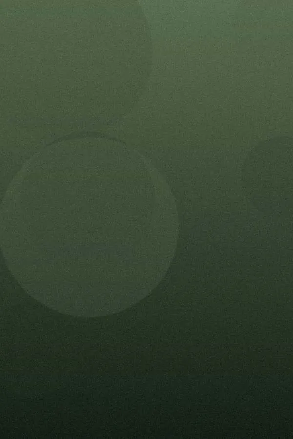
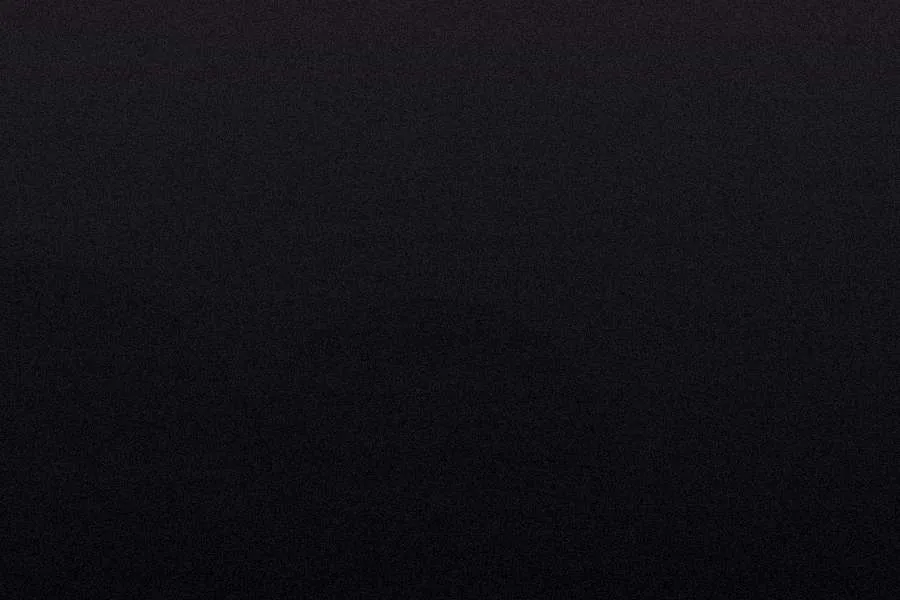
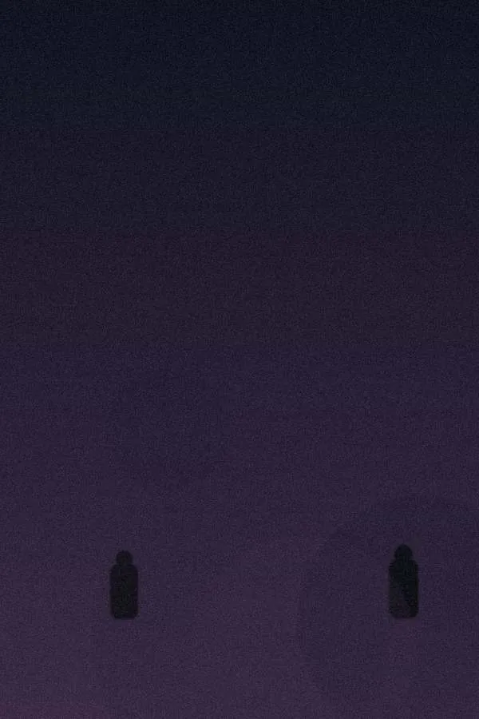
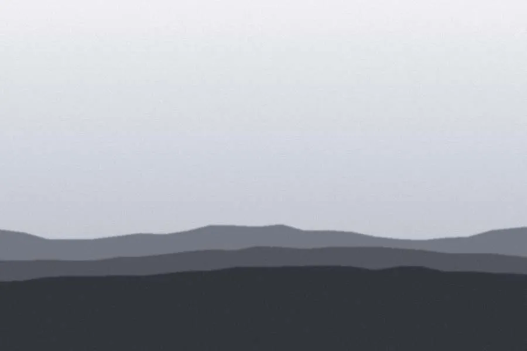

Choisissez un regard, ou une série : la grille se met à jour sous vos yeux.




Les 12 photos de Julien sont affichées. Voir aussi les 33 photos de Sébastien
Autre état Regard « Les deux » : un diptyque s’insère entre deux rangées de la Sélection8
Lisbonne, le même belvédère à une heure d’écart.
 Miradouro, l’heure doréeVoyage · Julien · Lisbonne
Miradouro, l’heure doréeVoyage · Julien · Lisbonne Alfama, premier tramVoyage · Julien · Lisbonne
Alfama, premier tramVoyage · Julien · Lisbonne Ribeira, brume du fleuveVoyage · Julien · Porto
Ribeira, brume du fleuveVoyage · Julien · Porto Passante, rue Saint-VincentRue · Julien · Saint-Malo
Passante, rue Saint-VincentRue · Julien · Saint-Malo Le Sillon à marée basseAtlantique · Julien · Saint-Malo
Le Sillon à marée basseAtlantique · Julien · Saint-Malo Quai des Indes, 6 hRue · Julien · Lorient
Quai des Indes, 6 hRue · Julien · Lorient Crête du PilatPaysage · Julien · La Teste-de-Buch
Crête du PilatPaysage · Julien · La Teste-de-Buch Guerlédan, eau bassePaysage · Julien · Mûr-de-Bretagne
Guerlédan, eau bassePaysage · Julien · Mûr-de-Bretagne